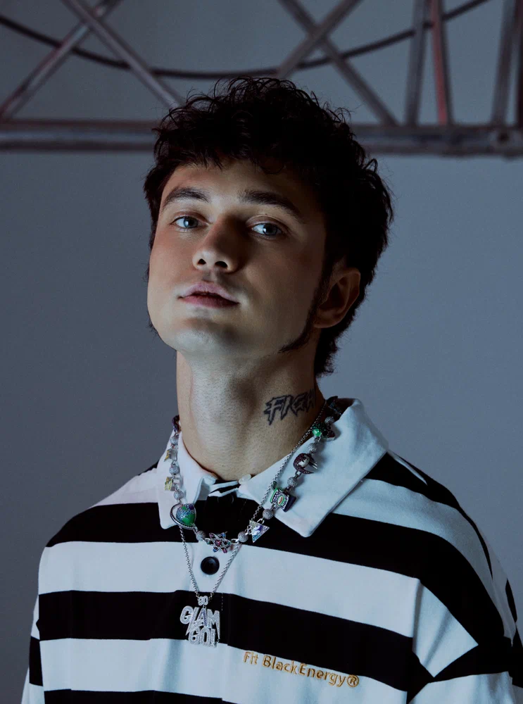
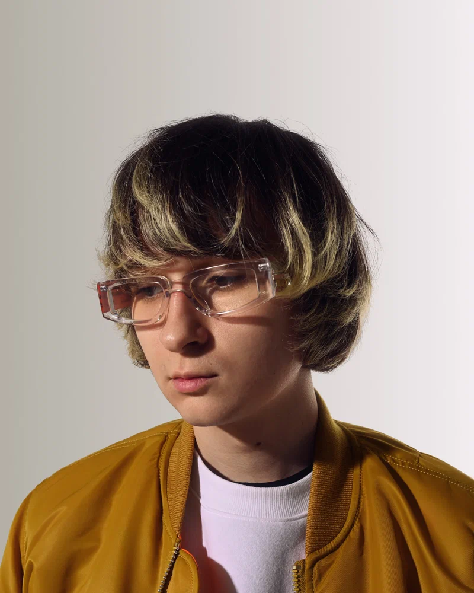

GONE.Fludd
GONE.Fludd, born Alexander Smirnov, is a Russian rapper and songwriter. He gained recognition in 2018 with the album Boys Don’t Cry, featuring the tracks “Мамбл” and “Кубик льда”.

GONE.Fludd, born Alexander Smirnov, is a Russian rapper and songwriter. He gained recognition in 2018 with the album Boys Don’t Cry, featuring the tracks “Мамбл” and “Кубик льда”.
Sade Adu is a Nigerian-born British singer and songwriter, and the lead vocalist of the band Sade. The band blends jazz, R&B and pop, and is known for songs such as “Smooth Operator”.

Valyuta Skuratov is a rap artist whose releases include “в главных ролях” and “вулфкат”. He also publishes music on SoundCloud, including tracks with his own production credits.